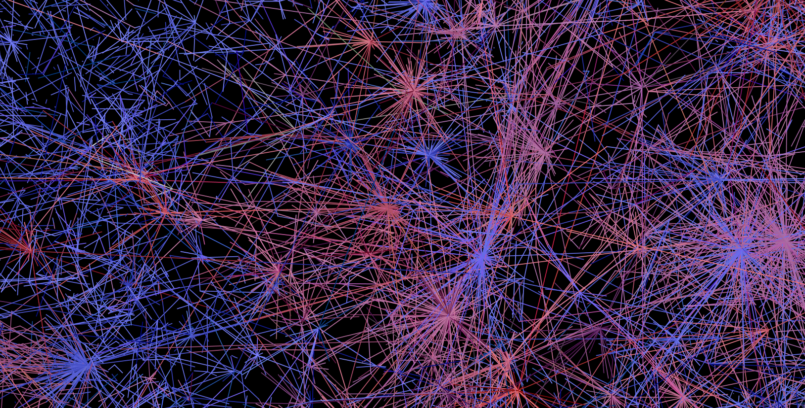
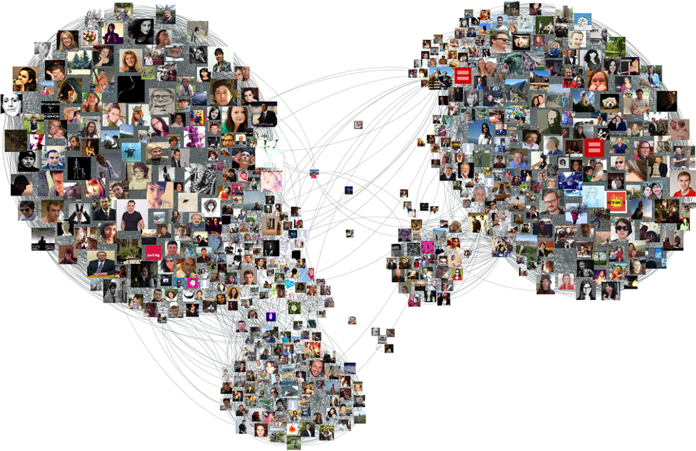
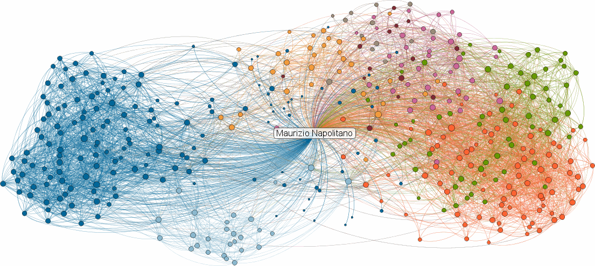
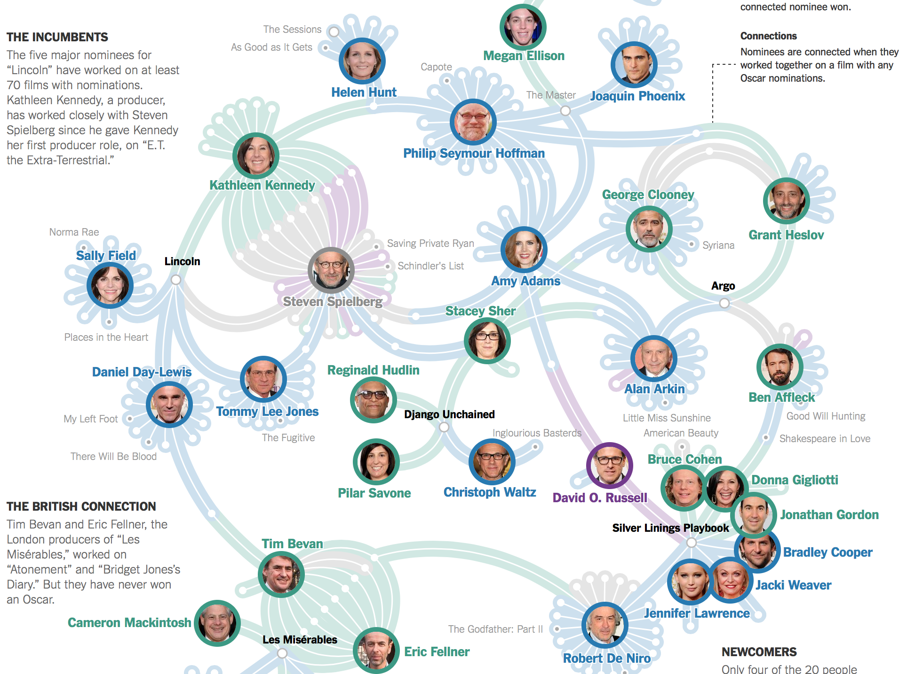
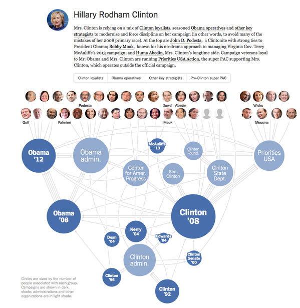
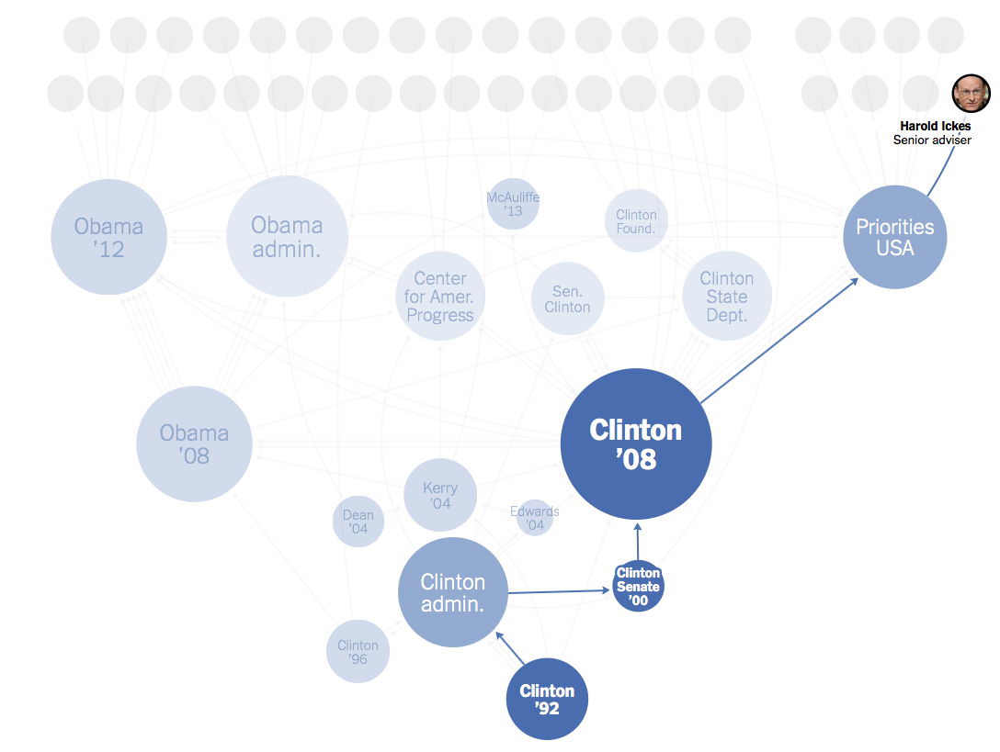
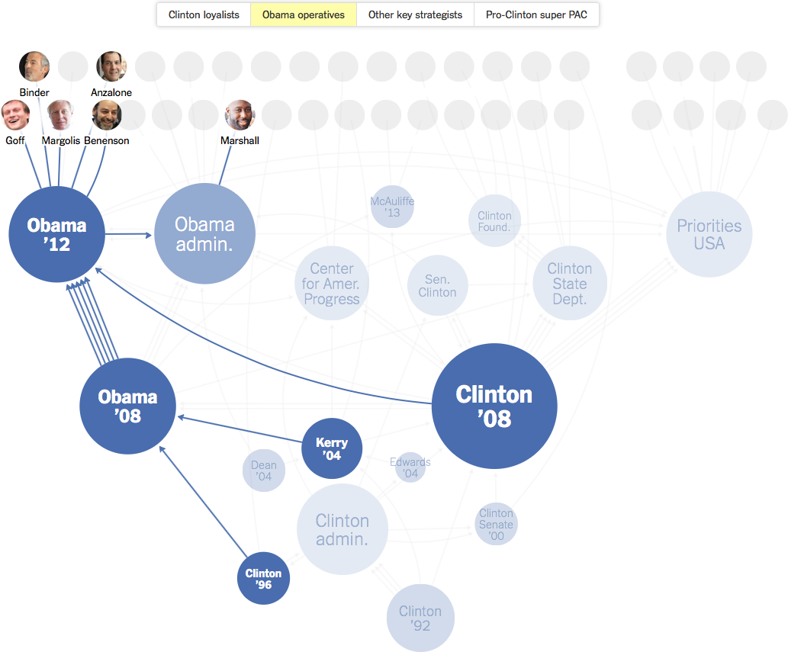

From the original site / 2015-06-29
This archived piece preserves its original text and historical context.
Popular Networks
On July 27th I'll be teaching a workshop at the ForwardJS conference on creating effective network visualizations using d3.js. I've long thought that network data visualization is one of the key forms of data visualization, equally as important as geospatial data visualization and more traditional charts of tabular or hierarchical data. That's because networks are everywhere, and network data can be found in practically any dataset, but also because network data visualization is the most visceral example of information visualization that shows more than just raw datapoints: it shows systems.
The explicitness of the connections in a network dataset or visualization is something I already covered with Sankey Diagrams (a type of network data visualization) and this time I'm going to focus more generically on some general principles for effective network data visualization.
To accomplish this, I'll look at some good examples and some really really horrible ones.
For many in the data visualization community, the only good use of a network data visualization is as the cover of a book (above is a particularly egregious example, given the subject matter) or as the background of a slide in a presentation about cool new stuff. Network diagrams are so problematic that they unite Stephen Few and Ben Fry in their condemnations, with the former stating "Everything looks like a graph, but almost nothing should ever be drawn as one." and the latter stating,
...network visualizations are rarely useful, except those that are very simple, for any purpose without the ability to interact with them to alter the view...Network visualizations attempt to provide a synthesis of the many parts and relationships that make up a complex set of interconnections. They are difficult to decipher, in part because the information is itself complex, and in part because our brains cannot process a complex set of visual connections as a whole when displayed as nodes and links.
And if you start to look around at the kinds of network data visualizations available in the world, you'd be forgiven for thinking they're absolutely right.

We're involved in so many online social networks. The network data visualization above is from my work analyzing the response to the Oslo attacks on Twitter. This particular view shows various twitter users connected to each other via @tweets. And it says nothing at all except that twitter networks are big and complicated. And yet, it's been incredibly popular, partly because it does demonstrate complexity and that resonates with readers feelings about social networks in general.

That's why you can get away network viz like these and still receive positive feedback. The image above is from one of numerous examples of how to export your Facebook network to visualize it in various network data toolkits like Gephi. The growing accessibility of toolkits like NodeXL, Pajek & Gephi has resulted in an explosion in network data visualization. But their focus on data processing and network statistics and their lack of attention to network cartography means that this proliferation has only reinforced the prejudice that network data visualization is uniformly unintelligible and useful only to impress the ignorant audiences.

That pragmatic value as a tool for shock and awe is likely what led to the long-tenured but now-deceased inMaps from LinkedIn. Besides the sources of these charts being social network data, they all share one thing in common: they're horrible and completely unreadable and provide nothing of value to a person asked to invest in understanding them.
You may argue that they're not horrible because perhaps you're accustomed to network data visualization and can identify a broker or interesting cluster somewhere. You'd be wrong. Any network that is as dense and messy as those seen above has no business being represented as a network diagram. The inMaps, for example, include all the connections of the individual from whom the ego network is derived, which actively militates against the strengths of the force-directed layout providing visual clusters of related individuals while adding absolutely no new information. After all, an ego network by definition is everyone connected to a node, why waste so much ink and visual clutter on so many sweeping links?
The problem with the FaceBook example is that it overemphasizes the nodes, in this case by using portraits for nodes. That negates the primary focus of a network: the structure. Node details should always be in the context of the network position of the nodes and never be so prominent that they actively obscure that structure.
The Twitter example (my own, I feel the need to remind) is not only lacking in any explanation whatsoever of what the links mean, but also uses a color ramp to indicate centrality. Color in network data visualization should be used sparingly if at all. There is already so much complex visual structure in the topology of the network that to try to further encode numerical or categorical data on top of it using color is a dangerous proposition.
Similar examples of opaque network data visualization can be found with a cursory Google Image Search, and includes many of my own early attempts at network data visualization. In contrast are a pair of network data visualizations produced by the New York Times to explain a variety of stories.
Just as it's not fair to Stephen Few to hang his entire estimation of network visualization on a couple quotes from four years ago (an eternity in the realm of data visualization), it also isn't fair for me to trot out that earlier Ben Fry quote (itself from 2007, so another four years before the Few quote) as I have done before.
Fry knows the importance of network visualization, as he so clearly expressed in reviewing the work of the artist Mark Lombardi, and what factors are so important to understanding how to do network data visualization well:
By relying too much on a computer algorithm to lay out the position of individual nodes in the network, we're presented with what might be charitably considered a mess, or worse, that the image actually obfuscates the meaning of the data it depicts. This is a mixture of two things. First, that the creator gave up before they tried to really understand the information. And second, that they pushed no further because they were sated by the subjective beauty and intricacy of the image, even if meaningless. This map of the internet made headlines in the 90s and was printed in Wired magazine, but offered little insight besides “the internet is made of lots of connections between lots of things” or simply “the internet is complicated.”
That's why when we look at a pair of examples from the New York Times, we can identify why they work so well and what axioms can be derived from their successful implementation.

The first and most explicitly social of these networks is a visualization of the connections between oscar nominees. A bipartite network, meaning it shows people and the movies they're involved in (rather than a network only of people or only of movies), it shows remarkable readability despite the complexity of the relationships. There are few overlapping lines and these are distinguished by the edge coloring and angle, and interesting macro and mezo structures of the network are visible to the most casual reader.
The color scheme used is a pleasant pastel, and only four categories are delineated, one of which is an agglomeration of the other three categories. Very few movie nodes are named, and the bipartite nature of the network allows for using portraits for the individuals without overwhelming the interesting structures of the network with graphical clutter. The distinctive graphical style of the edges and nodes allows for further encoding of Oscar success (in the form of names for movies not on that year's slate). A dot to indicate success and a border to indicate the current nomination work well for a reader because of their sparsity, and allow for shifting modes from looking at the network structure to reading individual events that make up the connections.
And it tells a story in a way that traditional charts simply can not. You can see how power politics in Hollywood work out, and identify the liminal and central figures in a complex social network.

A more challenging task is the representation of campaign staff shared across multiple campaigns through time. The NYT produced a series of these visualizations in May 2015, with this example showing how staff are shared among campaigns dating all the way back to the 1992 Clinton campaign. In this case, it's not a true bipartite network, because the campaigns themselves are connected by shared campaign staff, and the campaign staff only appear at the end to provide context. But this hybrid semibipartite network, though unsuited for the network statistics of off-the-shelf network visualization tools, is perfect for the purpose of understanding how campaigns emerge and abide and shift into other campaigns.

It also serves well for navigation, allowing readers to hover on a campaign worker to see what campaigns they participated in. This highlights an interesting characteristic of networks: the existence of several competing definitions of mezo (or middle-scale) structures. The whole network tells one story (macro) and each node or edge tells another story (micro) but between those scales exists the most interesting aspect of networks. That might take the form of communities, clusters, brokerage relationships, or in this case paths. The critical takeaway is that a path intersects with clusters and communities, which themselves may overlap. A network can be split into many different, overlapping stories.

Communities, such as this group of "Obama Operatives", are another mezo-structure within a network. Often network scientists discover communities using community detection algorithms such as those described by Fortunato his exhaustive census from 2009. But in this case, the Times has used curation to create communities that the journalists know to be meaningful. And thus we return to the number one requirement of any good network visualization: curation.
Curation, or authorship, is always necessary in any insightful data visualization. Your goal when creating data visualization shouldn't be to act as a conduit to let the raw data flow through you to your audience. That's difficult to accomplish unless you have an audience that's extremely familiar with the data format and pipeline. And while it's difficult with traditional data visualization, it's impossible with network data visualization, and pretensions that network data visualization software obviate that responsibility result in the bad network data viz that proliferates today. Network data visualization requires that you pare down the channels, emphasize the storytelling structure over the numerical precision of the data, avoid visual clutter in what is already a highly complex visual object, and above all curate your dataset with an eye toward your readers.
If you do that, then get access to the ability to expose a system to your readers, with dynamic and overlapping stories, communicating something more powerful than the raw numerical distance between a census of those same datapoints.